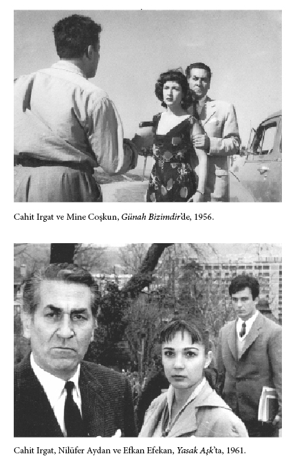

EK METİNLER
PARİS’TE BİRKAÇ TİYATRO
Cahit Irgat
Taraçalı kahveleri, konser salonları, resim galerileri, geniş bulvarları, Seine nehri boyunca sıra sıra köprüleri, “Balık Tutan Kedi Sokağı” gibi daracık sokakları ve her milletten altı milyon insanı ile dünyanın en güzel şehirlerinden biri olan Paris’in her semtinde tiyatrolara rastlanır.
Senelerce, dünyanın her yerinden akın eden ressamların oturduğu, her dilden konuşulduğu Montparnasse’dan sola doğru sapılınca Gaîté Montparnasse’a gidiyoruz. Bu dar sokak müzikholler, kahveler, oteller, sinemalar ve insanlarla kaynaşır. Bu sokakta iki tiyatro karşı karşıya, aynı saatlerde zillerini çalarlar, aynı saatte gişelerini ve kapılarını açarlar. Bu tiyatroların biri meşhur Théâtre Montparnasse - Gaston Baty, diğeri Théâtre Gaîté Montparnasse’dır.
Bir yıl önce, Paris’e indiğim günün akşamı, bu sokağın çok yakınında oturduğum için, soluğu Gaîté Montparnasse’da almış, A. Casona’nın Şafakta Gelen Kadın’ını seyretmiştim. Bu eseri Zamanımızın Tiyatrosu ismi altında temsiller veren Pierre Valde’ın kumpanyasından gördüm. Bu eser, Fransız sahnesinde gördüğüm ilk ve en güzel eserlerden biridir.
Aynı sokakta, Gaîté’nin karşısındaki Th. Montparnasse’da seyrettiğim ikinci eser Armand Salacrou’nun L’Archipel Lenoir’i oldu. Bu iki kısımlık komediyi büyük aktör Charles Dullin oynuyordu. Mise en scène’i [mizansen] de kendisi yapmıştı. Bu eseri Marguerite Jamois, Suzanne Demars, M. Vidal, Jacques Dufilho, Camille Fournier gibi sanatkârlar topluluğu oynamıştı. Kudretli oyunu ve mizanseni karşısında Charles Dullin’in Fransa’nın en titiz metteur en scène’lerinden ve en büyük aktörlerinden biri olduğuna inanmamak elde değil. Güzel dekor, onun oynadığı tiyatroda açılır; etrafına iyi sanatkârlar toplar. Böylece onun oynadığı ve sahneye koyduğu eser çok pahalıya mal olur ve bu yüzden de tiyatro sahipleri ve sermayedarları onu pek sevmezler.
Tabiat, fizik bakımından esirgediği şeylerin yerine ona bir dehâ vermiş. Koskoca kamburunu kapamak için ona ne güzel, güzelliği kadar da tesirli gözler bağışlamış. İnsan bu büyük tiyatro adamını seyrederken, onun kambur olduğunu hemen unutuyor, dehâsı karşısında silinip gidiyor.
Bence dün olduğu gibi bugün de, Fransız tiyatrosunun en büyük üstatlarından, temel taşlarından biri Charles Dullin’dir.
Federico Garcia Lorca, Fransa’da çok seviliyor. Yakın zamana kadar Studio des Champs-Elysées’de aylarca oynanan Yerma’da yer bulmak çok güç bir işti. Bu piyes kısır bir kadının trajedisidir. Ve eserin hemen hemen yarısını müzikle söylenen şiirler teşkil eder:
İki ılık süt çeşmesi
Etimin çok derinlerinde
Dörtnala giden atlı gibi
Çarpıyor kederimde
Eyvah benim memelerim, ikiniz de körsünüz
Urbamın altında
Kumrular kanatsız, kumrular kör
Eyvah, ensemde arıların vızıltısı
Ve mahpus kanımın acısında
Gel artık gel, benim sevgim, benim oğlum
Su tuz verir, toprak meyva
Ve karnımız yumuşacık çocuklar
Bulut gibi tatlı yağmur getiren
Çocuğu olmayan bir kadının dramı, Fransızlara, harpte çocuklarını, kardeşlerini kaybettikleri için tesir ediyor diyemeyiz. Çünkü Federico Garcia Lorca Fransa’da çok okunan, çok sevilen bir şairdir. Nitekim bugün aynı sanatkârın Kanlı Düğün isimli piyesinin provaları [Théatre] Marigny’de devam etmektedir. Bu eseri Jean-Louis Barrault sahneye koyacak ve nişanlı rolünü de bizzat kendi oynayacaktır.
Bu İspanyol şairinde bir tılsım olsa gerek.
Zamanımız tiyatrosunda müzik, dekor kadar, ışık kadar lüzumludur. Buna Fransız tiyatrosunda şahit oldum ve Fransa’da bulunduğum zaman içinde müziksiz hiçbir tiyatro görmedim. Catherine Fontenay, Jean Chevrier, Marie Bell, Komedi Fransez’den [Comédie Française] ayrıldıktan sonra beraber çalışmaya başladılar. Émile Zola’nın Thérèse Raquin’ini bu üç sanatkârdan seyrettim. Eser baştan başa müzikle ve ışık oyunlarıyla temsil ediliyordu. Christian Bérard’ın harikulade dekorları içinde ve Boris Kochno’nun ışık oyunlarıyla temsil edilen bu üç tabloluk eseri Paul Rolle takdim etmişti. Romandan tiyatro haline getirilince zayıflayan bu eseri, müzik ve ışık oyunları, Catherine Fontenay’in ve Marie Bell’in gerçekten büyük olan sanatkârlıkları kurtarıyordu. Fakat eserin bütün akışını ve ritmini de Kocho’nun ışık oyunları temin ediyordu.
Tiyatroya yeni bir zaviyeden [açıdan] bakan ve seyircinin gözleri önüne günlük siyasi ve içtimai mevzuları çırılçıplak seren Jean-Paul Sartre’ın, Antoine Tiyatrosu’nda aynı yıl içinde oynanan iki piyesi 1948-1949 senesinin en fazla alaka toplayan eserleri arasındadır. Bu eserlerin birincisi La Putain respectueuse’dur. Mevzusu Amerika’daki zenci düşmanlığına ait bu iki perdelik güzel eserde Héléna Bossis’nin büyük bir aktris olduğunu görüyoruz. Aynı kadın sanatkâr Les Mains sales’de de ne iyi bir sanatkâr olduğunu ispat ediyor. O kadar ki, André Luguet ve François Périer’le boy ölçüşüyor diyebiliriz. Bu tiyatroda Kirli Eller için yer bulmak hâlâ imkânsız gibidir.
Athénée, Théâtre Louis-Jouvet’de Don Juan hâlâ devam ediyor. Molière’in bu piyesinin temsili için “yeni bir zafer” diyenler var. Hakikaten harikulade bir mizansenle oynanan bu piyeste Molière’in bambaşka bir havası içindeyiz. Bu yepyeni havayı bize belki de Pierre Renoir, Fernand René, Monique Mélinand, Dominique Blanchar veriyorlar. Kostümler ve dekor Christian Bérard’ın, müzik ise Henri Sanguetnin. Görüyoruz ki, her tiyatroda karşımıza müzik çıkıyor.
Müzik, ışık ve mimik oyunları görmek istiyorsak J.-L. Barrault’nun Marigny Tiyatrosu’na gitmeliyiz. Bu tiyatroda Hamlet, Amphitryon, La Peste, Le Partage du Midi gibi eserler gördük. Barrault’nun tiyatrosunda müzik, ışık ve gölge oyunları, dekorların zaman zaman gözlerimizin önünde değişmesi, mimiğe fazla yer verilmesi Fransız tiyatrosunda bir hamle olmuştur. Ve bu hamle genç truplara tesir etmektedir. Bu yeni hava içinde Edwige Feuillère, Pierre Brasseur ve J.-L. Barrault’nun oynadıkları ve oynamaya devam ettikleri Le Partage du Midi’de Fransız tiyatrosunun zaferleri arısında kaydedilecek bir eserdir.
Harp sonu Fransız tiyatrosunun dünya tiyatrosunda sağlam ve ön planda bir yeri olduğu muhakkak. Fransız tiyatrosuna bu yeri sağlayan sanatkârlardan, çalışma tarzlarından, kazançlarından genç kumpanyalardan, tekniğin, müziğin, şiirin, balenin tiyatrodaki ehemmiyetinden gelecek yazılarımızda bahsedeceğiz.
Vatan, 28.1.1949, s. 4
Cahit Irgat ve Lale Oraloğlu.
Cahit Irgat
Cahit Irgat
Cahit Irgat
İpsala Cinayeti, 1953.
30 NİSAN’DA YAPILACAK JÜBİLESİ MÜNASEBETİYLE FERDİ TAYFUR
Cahit Irgat
Yıllarca önce, Edirne’de mektep sıralarında okurken, amatörlüğümde sahneye çıktığım sıralarda bir yerli film görmüştüm: Bir Millet Uyanıyor [1932]. Ve bu filmde yakışıklı mı yakışıklı, pırıl pırıl bir genç oynuyordu: Ferdi Tayfur.
Gençliğin verdiği bir duyuşla bu adama içerlemiş, onu çok kıskanmıştım. “Acaba ben de bir gün böyle bir filmde, böyle bir rol oynayabilir miyim?” diye. Günün birinde İstanbul’a geldim. Şehir Tiyatrosu’na girdim. Elime ayda “21 lira 13 kuruş” geçiyordu. Bu para bana yetmiyordu. O günlerde elimden ilk tutan Ertuğrul Muhsin olmuştu. Sonra da büyük yardımı Ferdi Tayfur’dan gördüm.
İpek Film’de Ferdi ile karşılaşmıştım. “Geç bakalım mikrofona!” demişti. O gün bugün, daha nicelerini yetiştirdi. İyi talebeleri, iyi dostları hâlâ peşini bırakmaz. O, bu güzel dünyanın çok güzel günlerini gördü, elbet çile de çekmiştir. Ama hiçbir zaman o dürüst, o mert, o babacan, o dimdik Ferdi Tayfur’luğundan zerrece kaybetmedi.
İşinde çok titiz, sinirlidir. Ferdi Hoca. Ferdi Hoca diyorum, çünkü ona çoğumuz ya “Hoca” veya “Baba” deriz. Ferdi Hoca tertemiz, hassas, merhametli, iyi kalplidir. Biri üzülmeye görsün, gözleri hemen doluverir.
O, gördüğüm insanların, tanıdığım sanat adamlarının en “has”larından biridir.
1904’te doğdu. Film hayatına 1931’de Çanakkale Geçilmez’le girdi.
Bir Millet Uyanıyor, Leblebici Horhor, Milyon Avcıları, vs. filmlerinde oynadı. İstiklâl Madalyası, Senede Bir Gün, v.s. filmlerin rejisörlüğünü yaptı.
Bütün bu başarılarının yanında, bence yaptığı en büyük iş, Meddahlığı 1945 yılında mikrofona ve dolayısıyla sinemaya mal etmesidir. Nitekim, hâlâ yedisinden yetmişine kadar, her evde Lorel-Hardi’nin, Arşak Palabıyıkyan’ın, Balıkçı Osman’ın, Ali Baba’nın, Nesimaçi’nin taklitleri yapılmıyor mu? Bu karakterleri yaratmak her babayiğitin harcı değildir.
Bizim sahne sanatımızın bir Karagöz geleneği vardır. Bu gölge oyunlarımızın unutulup gitmemesi için didinen büyük sanatçımız Hâzım Körmükçü idi. Meddahlığı da en yeni manada sahnemize ve sinemaya getiren Ferdi Tayfur’dur.
“Söylemek kolay, dinlemek zor” demişler. Ferdi Hoca hem dinletir, hem güldürür, hem ağlatır.
Ferdi Tayfur bu neslin sanatçısıdır: Yeni şiiri, yeni hikâyeyi, bu neslin sanat adamını her zaman ve her yerde savunmuştur. Orhan Veli’yi, Sait Faik’i ve bu neslin bütün değerlerini sever. Ve senin bu sanatçıları sevdiğin gibi, halk da seni ve sanatçıları sever Hoca. Hani senin çevirdiğin ilk filmlerinden birinin ismi gibi: Bir Millet Uyanıyor. 30 Nisan’da jübileni kutlayacağımız bu sanat adamı, Music-Halls’i, Chansonniers’i bol bir yerde yaşasaydı neler neler yapmazdı. Hep beraber nice nice yıllara Ferdi Hoca.
Yaşadığı bir devrin zaferlerinden
Bir yağmur gözlerinde biriken.
Bir adam geçiyor asırların üstünden...*
Vatan, 19.4.1956, s. 2
* Cahit Irgat, Ferdi Tayfur için –adı anılmaksızın– birkaç kez şiir yazmıştır. Irgatın Türküsü’nde yer almayan –ve ilk kez nerede yayımlandığı saptanamayan– bu üç dize onlardan biri olmalı. Bu şiire bakarak, adı geçen kitaptaki “Son Yalnız” ile –kitaba alınmamış– “Yaşayan Bir Aktör’e Yazıldı”nın da Ferdi Tayfur için yazıldığı anlaşılıyor.

Bir film çalışmasından Kadri Ögelman(ortada) ve Cahit Irgat (sağda).
ÖLÜMÜ MÜNASEBETİYLE:
FERDİ TAYFUR
Cahit Irgat
İstanbul’a yeni geldim, kötü haberi aldım. Oysaki, Be-yoğlu’na ayak basar basmaz kapının önünden geçtim iki kere. Sırf seni aramak için. Elim varmadı kapını çalmaya. İyi ki çalmamışım, evde değilmişsin.
Sen gördüğüm, tanıdığım “sanat adamları”nın en içlisi, en hassası, en babacanı, en merti, en namuslusu, en yardımseveni, en dik başlısı, en tok sözlüsüydün bence. Onun için kendi kendini yedin, bunun için kendine kahrettin ya.
Biz bu mavalları çok dinledik: Veremden öldü, isteri krizinden öldü. Şundan öldü, bundan öldü, kendi kendini öldürdü. Biz bu mavalları çok dinledik. Bir gün de çıkıp biri, nedenini, niçinini soran olmadı. Biz bu mavalları çok dinledik Ferdi Hoca.
Orhan Veli neden öldü? Cahit Sıtkı neden öldü? Sait Faik neden öldü? Evet, alkolden. Ama nedenini niçinini soran yok!
Naşit [Özcan] neden öldü? Hâzım [Kömükçü] neden öldü? Sait Köknar neden öldü? Küçük Kemal neden öldü? Settar’cığım [Körmükçü] neden öldü?.. Kimi alkolden, kimi veremden, kimi yokluktan! Senden önce, Talât [Artemel] gitti. Nedeni, niçini yok değil mi bunun?.. Var ama, bana düşmez söylemek.
“Söylemek kolay, dinlemek zor. Sen hem dinletir, hem güldürür, hem ağlatırdın. Music-Halls’i, Chansonniers’i bol olan bir yerde yaşasaydın, neler neler yapmazdın sen. Yaptıkların da yeter bence. Adam olana çok bile. Ama bizde Karagözler, Hacıvatlar, Naşitler, Hâzımlar, kimler kimler unutulmuş. Ferdi dostum, Ferdi Hoca!.. Biz yaşarken bile zor hatırlanan, bir bakıma unutulmuş insanlar değil miydik? Değil miyiz?”
Sana genç aktör dostum Şükran Güngör’den “saygılar” getirmiştim. Kapını çalamayınca, hele sen de öbür dünyaya gidince, iletemedim sana. Hani “aktör” olmaya uğraşırken, yüksek tahsilini de tamamlamaya çalışıyordu. Hani Godot’yu Beklerken’i beraber oynamıştık, işte o Şükran Güngör. Sana bir gün mektup yazmıştı, “Tahsilimi yapmam için dublaj yapmalıyım,” diye. Sen hemen o gece telgraf çekmiştin, “Yarın 10’da işte bulunun,” diye. Şükran Güngör nasıl ağlamaklıdır kim bilir şimdi. Daha kimler, daha kimler.
Aramızda on iki yaş farkı vardı. Sen bizim neslin sanatçısısın. Yeni şiiri, yeni hikâyeyi, yeniyi, bu neslin adamını her yerde, her zaman savunmuştun. Gittiğin yerde, bunların en haslarını bulacaksın. Çoğu tanıdığın zaten: Baba-oğul Körmükçü’lerle, Naşit’le ne şakalarınız olacak kim bilir. Piyes yazarı Reşat Nuri [Güntekin] orada. Eleştirmen [Nurullah] Ataç orada, bizim kuşağımızın şairleri, yazarları orada. Aktörlerimiz orada; orada daha rahat edeceksin gibi geliyor bana. Belli olmaz, burada düşünüp de yapamadığımız en ileri tiyatroyu, sanatı orada siz kuracaksınız belki. Yeni elemanlara ihtiyacınız olursa, hiç merak etmeyin, hazırız, geleceğiz zaten.
Dünyanın bu yanında ne gördük ki, ötesinden korkalım?
Bütün dostlara selam.
Yerimizi hazır edin.
Cahit Irgat
İpsala Cinayeti, 1953.
Vatan, 26.3.1958, s. 4
EŞLERİ GÖZÜYLE SANATÇILARIMIZ: NERİMAN IRGAT GÖZÜYLE
CAHİT IRGAT
Cahit Irgat
Esmerce. Gözleri kımıl kımıl. Güleççe bir zekâ. Bu ikinci kez karşılıklığımız. Boyna “mükrim” [ağırlayan]. Bu kez evindeyiz ya... Cahit Irgat hiç katışmıyor söyleşimize; sözü genelleştirsek de, dön-dolaş, hoşbeşi şuracığa getirmek gerekli, işte:
– Eşinizin sanat ve yaşam serüvenini izlemiş miydiniz? Bu açıdan genel izlenimleriniz nedir? Şu güzelim yan yanalığa hangi nedenlerle “evet” dediniz?
– Evet, gerek sinema oyuncusu, gerekse tiyatro aktörü olarak hayrandım. Devamlı olarak da seyircisi idim. Çok sonraları da, onunla beraber olmak mutluluğuna eriştim.
– Irgat’ı –genel olarak– nasıl tanımlayabilirsiniz bugün? En belirgin erdemleri, kusurları nelerdir?
– Cahit, kişiliği ile son derece hassas ve karamsardır. Aynı zamanda çocuk ruhludur. Mesela, çok önemsiz bir olay ile günlerce kendini üzdüğünü ve harap ettiğini yakından izlemişimdir. Buna karşılık, onu ufak bir şey ile de sevindirmek mümkündür.
– Şair yönü mü önemlidir sizce, aktör yönü mü?
– Bence her ikisi de önemlidir. Günlük yaşantımız açısından oyunculuğu önemli ama, bir sanatçının kalıcılığı yönünden şairliğini yeğliyorum.
– Evliliğinizden bu yana Irgat’ta neler değişti, olumlu ve olumsuz olarak? Bu değişimlerde hangi somut “faktör”ler rol oynadı?
– Cahit’le evliliğimin ona birçok şeyler sağladığına eminim. Bir yerden sonra, yalnızlığı sevmiyor; zaten aslında mazbut bir ev erkeğidir. Ve bu, evliliğimizin onu eve bağladığını, şairliğinin yanı sıra oyunculuğunun da daha verimli olduğunu görüyorum.
– Eşinizin oldukça fırtınalı bir geçmişi var. Bu geçmiş, sizi tedirgin eder mi? Birlikteliğinizde gerçek mutluluğunuzu sağlayan ana nedenler?
– Hayır, hiç tedirgin olmadım. Yalnız, ona bu geçmişini unutturmaya çalıştım. Zaman zaman da, o günleri hatırlayıp üzüldüğünü görürüm ve ona şimdiki hayatı ile mukayese ettiği zaman, ne kadar mutlu olması gerektiğini hatırlatırım.
– Kimi sanatçı eşleri, bir sanatçı ile yaşamanın güçlüklerinden yakındılar. Kişiye göre başka başka yorumlanabilecek bir yargı bu. Sizce, evliliğin yapıcı ya da yıkıcı etkenleri ne olabilir, bir sanatçıda? Bir başka deyişle, bu tür bir bağımlılık, sanatçının verim, yaratım gücünü, yeteneğini örseleyebilir mi?
– Bir sanatçı ile yaşamanın –bir bakıma– zor olduğunu kabul ediyorum. Bizlerden ayrı bir yapıdadırlar ve onları anlamak her zaman kolay olmaz. Kaprisleri olur ve o yönlerine karşı çıkmak bence hatadır. Bu gibi tepkileri evliliğimizin başlangıcında ben de gösteriyordum ve Cahit üzerinde olumsuz etkilerini de gördüm. Oyun gücü azalıyordu. Bunun nedenlerini ilkten sezemiyordum; sonraları, hatanın bende olduğunu anladım. Kanımca, bir sanatçıya anlayış göstermek gerekir ve bu tutum onun işinde verimli, evinde de mutlu olmasını sağlar.
– Eşinizle ilgili en unutamadığınız bir anı?
– Anlatayım: üç yıl önce Gen-Ar Tiyatrosu ile turneye ben de katılmıştım. Cahit, ille de Karadeniz’i görmemi istiyordu. Oynadıkları oyun, Nâzım Hikmet’in Yolcu’suydu. Trabzon’a vardığımızda, sözde, Trabzon valisi oyunun oynatılmaması için emir vermiş. Nedeni de Nâzım Hikmet’in komünistliği! Vali yerinde arandığında, hep yok deniliyordu. Morali bozuldu oyuncuların. Otelci de dışarı çıkmamızın sakıncalarını söylüyordu boyuna. Kapanıp kalmıştık. Oysa Cahit, böyle suspus oturacak insan değil; bana, “Yürü, yemeği dışarıda yiyeceğiz,” dedi. Çıktık. Çıkar çıkmaz da, etrafımızı bir sürü çocuk ve yeşil bereliler sarıverdi; ellerinde irili ufaklı taşlar. Ben korkudan Cahit’in koluna asıldım. O ise, “Hiç sesini çıkarma, yürüyelim,” dedi. Biz sakin yürümeye çalışırken, ötekiler ardımızdan, “Komünist... Çünkü sanatçı yaratıcıdır; dolayısıyla komünist!” diye bağırıyorlardı. Fakat taşlamaya cesaret edemediler. Sonradan öğrendik ki, hepsi belli kişilerce para ile tutulmuş. O günkü korku ve heyecanımı unutamam.
Güney, Temmuz 1970, S. 34, s. 9
CAHİT IRGAT, TİYATRO
AĞALARINA SAVAŞ AÇTI
Tanju Cılızoğlu
Bu adam tiyatro sanatçısı. Bu adam şair. Bu adam elli yıllık yaşamı içersinde bir gün bile nasıl apartman sahibi olurum, nasıl altıma bir araba çekerim, nasıl fişmanca beye hulus çakarsam bir Avrupa seyahati ayarlarım diye düşünmemiş. Çok daha zor, çok daha gerçek, çok daha yüce bir tutkuya yaslamış tüm yaşamını. İnsanlara, ülkesinin yoksul insanlarına, ülkesinin perişanlığına, ülkesinin sancılarına nasıl yararlı olurum diye zorlamış yaşamını. Darlara düşmüş, ama tüketmemiş içinde çöreklenmiş halk sevgisini.
Tüm bu anlattıklarını Cahit Irgat bir şiirinde yalın içten duygulu tek mısrada veriyor:
Ekmeğimi gözyaşıma bandım da yedim
... Her okuldan kovuldum. Anarşist dediler kovdular. Nihilist dediler kovdular. Komünist dediler kovdular. Otuz bir yıldır aktörlük yapıyorum. Elimden lehimcilik gelmedi. Marangozluk gelmedi. Benim savaşım daha güçlü, daha düzenli, daha mutlu bir dünya yaratmak. Ama elli yıllık ömrü darlarda, zorlarda geçirdik. Ne olursa olsun, istediğim, dilediğim bir çizgide sürdürüyorum ömrümü. Savaşı bırakmadan, kavgadan kaçmadan.
Elli yıllık bir yaşamın tüm zorlukları yıldırmamış, küstürmemiş ve yenik düşmemiş Cahit Irgat. Acısını şiirde kusmuş. Tiyatroda bitirmiş. “Köyün insanına tiyatro gerek. Halka daha çok, daha çok, daha çok tiyatro götürmek gerek. Tiyatro okuldur. Tiyatro bir kültür aracıdır,” diyor sonra, bu ülkenin tiyatro ağalarını suçlayarak bir gerçeği savunuyor.
“Şehir Tiyatroları’nın dışında, Devlet tiyatrosu’nun dışında bir de yeni kurulan Öğretmenler Sendikası[’nın kuruluşu] Tiyatro T.Ö.S dışında tüm tiyatrolar önce emek sömürücülüğü üstüne kurulmuştur. Piyeslerin kulisinde yorgunluktan bayılan, sahne aralarında bir şişe gazozu bile borca içen tiyatro oyuncuları çoğunlukla ne alırlar biliyor musun? Gülünç bir rakam; ayda iki yüz lira ile beş yüz lira arasında. Bir iki, isim yapmış, tiyatro oyuncusu tutmuş, bir tiyatro kurmuş. Yanına kendisini gölgelemeyecek birkaç fedai toplamış. Ayda iki yüz lira, üç yüz lira aylıkla sömürülecek birkaç fedai, olmuş sana Türk tiyatrosu. Yürümez tabii. Ulaşmaz. Güçlenmez böyle bir düzende tiyatro. Bir kısım isim yapmış tiyatro ağalarının sömürü düzeninde giden tiyatro halka ulaşmaz. Halkı güçlendirmez. Hiçbir sosyal güvenliği yoktur bu tiyatroda tükenen insanın. Yazın şehre sıcaklar inip tiyatrolar perdesini kapadı mı ağalar bu iki-üç yüz lirayı da keserler. Ve bu yıl dört arkadaşımla bu kuruluşa karşı çıktık. Son derece iyi de gitti sayılır işler. Halkın verdiğini herkes tiyatroda kardeşçe bölüştü. Gelecek yıl daha geniş, daha yaygın düşünüyorum bu gelişimi. ‘Ben yıldızım, ben aslan payını alırım’ demeden tüm oyuncuların ortak olacağı, emeğinde ortak olacağı, kazancında ortak olacağı bir tiyatro düşünüyorum.”
Cahit Irgat her dönemde, her bulunduğu yerde gerçekleri kustukça, gerçekleri tükürür gibi yiğitçe verdikçe kovmuşlar kendisini, ezmişler kendisini. Ama yılların ardında yine Cahit Irgat ayakta, yine Cahit Irgat bir kavganın içinde
Gelecek yıl tüm emekçilerinin ortak olduğu tiyatroyu kurarsa Cahit Irgat, daha çok köye götürecek kuruluşunu. Tiyatrosunu illere, ilçelere taşıyacak; kendi deyimi ile “okul”unu.
Bir şiirin örgüsünde yaşar gibi koca Cahit Irgat, bu coşkuda yaşıyor şimdi. Yanında kendisi gibi düşünen, kendisi gibi inanmış Tuncer Kurtiz’le birlik gecelerde, gündüzlerde tek kayguları, tek çabaları bu.
Gelecek yıl Cahit Irgat, Erol Günaydın, Tuncer Kurtiz, Suna Keskin ortaklığını bir daha genişletecek. Bir daha yeniden düzenleyecek. Cahit Irgat tüm sömürülen tiyatro oyuncularına çağrıda bulunuyor:
“Gelin emeğimizi, alınterimizi, gücümüzü birleştirelim. Gelin, bizi tüketen tiyatro ağalarına kul olmaktansa kendi ürettiğimiz değeri kendimiz kardeşçe, insanca, hakça bölüşelim.”
Bizden kavganız kutlu olsun, demek. Bizden dostlukla bunu duyurmak, bunu anlatmak. Bizden saygı Cahit Irgat’a. Irgat gibi düşünenlere. Bizden ak saygılar...
Akşam, 18.4.1967, s. 5
Suna Keskin, Cahit Irgat ve Erol Günaydın,
Nâzım Hikmet’in Yolcu adlı oyunundan, 1966.
Cahit Irgat
ANLAŞILMASI ÇOK GÜÇ
BİR SANATÇI CAHİT IRGAT
Ali Z. Oraloğlu
Yirmi yıllık dost Cahit Irgat’ın inişli-çıkışlı ve eşine kolay kolay rastlanmayan bir hayat çizgisi vardır. Çocukluğu para içinde geçmiş, büyüdüğünde çok para kazanmış, buna karşılık meteliğe kurşun attığı, ondan bundan borç aradığı günler olmuştur. Tiyatro ve filmlerde başrollere çıkmış, ufak rollere rıza gösterdiği, boyun büktüğü günler görülmüştür. Normal yaşantısında sakin, uysal, saygılı ve ufak bir olayda gözleri yaşaran Cahit’in, içtiği zaman herkesi rahatsız eden, önüne gelenle münakaşaya giren bir baş belası kesildiği görülmüştür.
Şiir yazmış, solculuk propagandası yapıyor diye mahkûm edilmiş, af çıkınca paçayı kurtarmıştır. Paris’te figüran rollerine çıkmış, Türkiye’de [İstanbul] Şehir [Tiyatrosu] ve Devlet Tiyatroları dahil aşağı yukarı oynamadığı, sonra da herhangi bir nedenle kızıp ayrılmadığı tiyatro kalmamıştır.
Bir odaya kapanıp aylarca içki komasına girmiş, eskilerin “tımarhane” dedikleri [Bakırköy Ruh ve] Sinir Hastanesi’nde kendine gelmeye çalışmıştır.
Hayatı bu kadar dolu olan ve 16 Mart’ta “35. Sanat Yılı”nı bir jübile ile kutlayacak olan “Cahit Irgat” bir röportaja nasıl sığdırılabilir.
Cahit’i tam manasıyla tanımak, ruh bunalımlarını anlayabilmek için kendimi çok zorlamışımdır. Hatta merak da etmişimdir. Bunda başarıya ulaşıp ulaşamadığımı bilemiyorum ama bu “büyük sanatçı”nın, yan sütunlarda verdiğimiz hayat hikâyesinde, iniş-çıkışlarının nedenlerini anlamak pek güç olmayacak gibi geliyor bana.
– 1916 yılında Lüleburgaz’da doğdum. Babam yüzbaşılıktan emekli Saffet Bey, Yahudilerle ortak peynir ticareti yapıyordu. İçkiyi sever, çok şık giyinirdi. Çok da çapkındı. Bol parası olduğundan İstanbul’dan saz ve çengi takımları çağırır, sabahlara kadar eğlenirdi.
Babamın üçüncü karısı olan annem Makbule Hanım çok güzel bir kadındı. Böyle bir hayata dayanamayarak babamdan boşandı.
... Bu ayrılık, anneme çılgıncasına âşık olan babamı deliye çevirdi. Ceketimin cebine kum koyar, elime kezzap dolu şişe verir, “Git bunları annenin yüzüne at,” derdi. Tabii bu söylediklerini yapamazdım, ama anneme eziyet olsun diye, “Git terliğinin tekini sakla,” deyince bu sözlerini yerine getirirdim. Bir gün tahsildarlık yapan anne, dedemin topladığı paralarla defterleri ortadan yok olunca, terlik hikâyesi hatırlanarak, benim aldığım zannedildi. Bu yüzden büyüyünceye kadar bütün anne ailem beni “hırsız” diye itham etti. İşin garip tarafı bu para ve defterler çok uzun yıllar sonra evin helasının duvarında bulunmuştu. Babamın kışkırtmaları, ailenin ithamı üzerimde büyük bir etki yaptı. Ailemden soğudum, insanları sevmemeye başladım, asi oldum.
... Annem bir diş doktoru ile evlendi ve bazılarını hâlâ tanımadığım beş kardeşim oldu. Babam ise evvela bir Yahudi metres tuttu. Sonra da evlenmelerine devam ederek dokuz kere nikâh memurunun karşısına çıktı.
... İlk rakıyı altı yaşında babamın kucağında içmiştim. Bir kadeh rakı uzatıp, “Al iç,” dedi. Dudağıma götürüp, “Çok acı,” dedim. İçine bir şeker atıp yeniden verdi. Tabii içtim. Ondan sonra 18 yaşına, sanat çevreleri girinceye kadar ağzıma içki koymadım. Orhan Veli, Sait Faik, Cahit Sıtkı ile birlikte başladım içkinin tadını almaya.
... Edirne Maarif Mektebi’nde okurken turneye gelen Raşit Rıza’ya beni kadrosuna almak için başvurdum. Aynı zamanda Muhsin Ertuğrul’a da mektup yazmıştım. O sıralarda Reşat Nuri Güntekin Maarif Müfettişi olarak geldiği Edirne’de verdiğimiz müsamerede beni seyrettikten sonra, “Oğlum sen oyuncudan başka bir şey olamazsın. Ne yap, ne et bir tiyatroya gir,” demişti. Onun aracılığı ile evvela Raşit Rıza’nın trubuna, altı ay sonra da 1935-1936 sezonunda Şehir Tiyatrosu’na girdim.
... Şehir Tiyatrosu’nda oynarken yeni açılan Ankara Kon-servatuvarı’na kaydoldum. En iyi öğrenci bendim ve okulun solcularındandım. Bir gün o çağın Başbakanı İsmet İnönü, Konservatuvar’a geldi. Ben sakallı idim. Paşa sordu, “Niye tıraş olmadın?” diye. “Dört lira aylıkla jilet alacak param olmuyor,” dedim. Arkaya döndü, idarecilerle bir şeyler konuştuktan sonra, “44 lira verin,” dedi. 44 lira ile asistan kadrosuna atandım.
... Yukarda da söyledim, Konservatuvar’ın en iyi öğrencisi idim. Bu yüzden beni üç yıllığına Londra’ya yollamaya karar vermişlerdi. Solcu olduğumdan herkes aleyhime dönmüştü. Bu yüzden bana ayrılan ödenek ikiye bölünerek Ertuğrul İlgin ile Mahir Canova İngiltere’ye gönderildi. Basın ve kordiplomatik için bir gece hazırlanıyordu. Programdan ismimin silinmesi üzerine Konservatuvar’da isyan çıktı. Kovulacağımı anlayarak doğru yatakhaneye çıkıp bavulumu hazırladım. Ertesi sabah İnzibat Meclisi’ne çıktığımda Cevat Memduh, “Seni asıp, altında ağlayacağız,” dedi. Ben de, “Asılacağımı biliyordum,” deyip yanlarından ayrıldım.
... Yine Şehir Tiyatrosu’na döndüm. Yıl 1940 olmuştu. Bol bol film çeviriyor, çok para kazanıyordum. Evlenip, iki çocuğum oldu. Bir şiir kitabı yayımladım. Fransızlar burs teklif ettiler. Birikmiş 16 bin liram da vardı. Hayalimde yaşattığım Paris’e ayak bastığım gün o çağın ünlü sinema oyuncusu Corinne Luchaire’le* tanışıp üç gün üç gece onunla kapandım. Paris’i bilmeyen arkadaşının daha ilk günde ortadan kaybolması Sabahattin Ali’yi endişelendirdiğinden zavallı beni aramadık yer bırakmayarak sonunda karakola başvurmuş..
... Vieux Colombier Tiyatrosu’nda Charles Dullin’in kurslarına devam ediyor, Montparnasse Tiyatrosu’nda [Armand Salacrou’nun] L’archipel Lenoir oyununda ve Comédie Française’de figüran rollerine çıkıyordum. Jean Marais, Marie Bell, yazar [Jasques] Audiberti ve birçok sanatçı ile tanışmıştım. Tiyatroda değilse bile filmcilik alanında bir şeyler yapabileceğime inanıyordum.
... Bir buçuk yıllık bir ayrılıktan sonra İstanbul’a döndüm. Keşke dönmeseymişim. Kaç yıl evvel yayımladığım şiir kitabında solculuk propagandası yapıp, halkı isyana teşvik ediyor iddiası ile tevkif edildim. Duruşma sonucu üç aya mahkûm edildim, ama af çıktığından paçayı kurtardım.
... Yine eski yuvaya, Şehir Tiyatrosu’na döndüm. Çok para getirdiğinden filmciliğe başladım. 1952’de Ortalık adlı şiir kitabım da takibata uğradı. Bu sefer beraat ettim. İngiltere’ye gitti isem de oraya ısınamayıp altı ay sonra geri döndüm.
Bu sefer iki yıl Devlet Tiyatrosu’na (davet üzerine) girdim. Ankara’da otel odalarına, yalnızlığa, arkadaşsızlığa dayanamayarak istifayı basıp İstanbul’a döndüm.
... Özel tiyatrolar arasında dolaştım durdum. 1959’da alkol devresi başladı. Alkol duvarını aşıyor, rekorlar kırıyordum. Tam bir bocalama içindeydim. Tatminsizlik, itme, kompleks, yahut sinirlerimin çok zayıf olması beni durmadan içkiye itiyordu. 1960’da biraz toparlanıp yine tiyatroya döndüm. Sonra yine alkol ve tek başına bir otel odasına kapanma devri başladı. Beş param olmadığından meyhanelerde, “Sonra alırız” diye bedava içki veriyorlardı. Bir gece tam dört yarım şişe rakı içtikten sonra yürüye yürüye Aksaray’dan Şişli’ye gittim. Fransız La Paix Hastanesi’nin doktoruna, “Param yok ama ben burada kalacağım,” dedim. “Peki” diye cevap alınca, “Ama ben içki içmek istiyorum,” diye dayattım. Adamcağız ona da peki dedi. Birlikte iki yarım şişe votka içtikten sonra hastaneye yattım.
... 14 gün sonra taburcu edildiğimde evim, dostum, param yoktu. Bütün yaz üvey biraderin evinde kaldım. Altı ay ağzıma içki koymadım. Bol bol denize girip, güneş banyosu yaptım. Sonra yine tiyatrolar ve filmler birbirini takip etti.
... Şimdi çok az, arada sırada içiyorum. Beni anlamaya çalışan iyi bir karım var. Geçinip gidiyorum işte.
Milliyet, 5.3.1970, s. 8
* Fransız Greta Garbo’su olarak ünlenmiş ve asıl adı Rosita Christiane Yvette olan Corinne Luchaire’den söz ediyor.
Cahit Irgat
Çizgi Metin Eloğlu
Bir film çekiminde Cahit Irgat (sol baş) ve Ö. Lütfi Akat (sağ baş).
IRGAT DA GİTTİ
Fikret Ürgüp
Cahit Irgat da gitti. Yine eksildik.
Temiz, dosdoğru ve de şairdi.
Yaşam kısa, ölüm uzun sürüyor. Ölüm acısını çekenler bilirler. O’nu, “Şair Cahit Saffet” iken tanımıştım. Sanırsam, 1936’da. O zamandan bu yana, birbirimizi kırmadan sıcacık bir sevgi sürüp gitti aramızda. Belki, bazen kendi derdimize, tasalarımıza kapılıp birbirimizi ihmal ettik. Bu da olur.
Cahit, koskoca bir adamdı. Dimdik. Dosdoğru. Kendisi neyse öyle. İçinde; insan kaderine, insan davranışlarındaki sevgisizlik, küçüklük ve alçaklığa isyanla yaşadı. Şiirlerinde hep bu isyan vardır. Bir de sevgiyle anlaşmanın, barışın hasreti.
Yarısı acı, yarısı sıcak bir bükülüşü vardı dudaklarının. Sağ yanı aşağı kıvrık, küfür eder; sol yanı gevşemiş, içindeki sevgiyi yayardı.
İnsanlar arası anlaşmanın ve barışın zorluğunu yaşadı; yaşantısı boyunca. O yüzden, acı konuştuğu olurdu. Ama içinden; bozucu, rahatsız etmek isteyen bir insan değildi. Saldırgan değildi. Çünkü kendilerine inancı olmayanlar, ancak başkalarını bozarlarsa kendi kişiliklerini hissederler. Cahit’in, haklı olarak, kendine inancı vardı. Yaşantısı ve eseriyle de bunu gösterdi.
Şairdi. Aktördü. Sanatçı olarak yaşardı. Sanatçının tarifi, bence, “Şiiri tasa edinmek”tir. O da öyleydi.
“Ölmüş!” dediler.
İnanması zordu.
“Dağcılar” diye bir öykü yazmıştım; o, ölmeden önce. Daha doğrusu: Seven insan, sevdiği insanın ölümüne inanmaz ve aklı almaz. Kadın olsun, erkek olsun, çocuk olsun.
“Nasıl ölür?” der seven insan.
Sevmeyenler:
“Öldü işte!” derler.
Güney, Temmuz 1971, S. 46, s. 43
ANLAŞMAK
Metin Eloğlu
Cahit Saffet döneminde soyadı Mutlu’ydu; değiştirmek istiyordu ille de, Irgat’ı tutturmuştu. Bir söyleşide nedenini sorduğumda: “Kişi yalan söylememeli, soyadıyla bile,” dediğini ansıyorum. Irgat’ı kimlik belgesine de yazdırmak için “usulen” açılan davada tanıktım; yargıç sordu:
– Irgat olarak mı tanırsınız beyi?
Ne denir?
– Evet.
Geçen yılın da aynı günleri miydi? Adana sarı sıcağının Şişli’ye çöküştüğünde uğurluyorduk Orhan Kemal’i; ta Zincirlikuyu’da bir kerpiç çukura. Cahit’le hep yan yanaydık; dönüşte bunalmıştık o acılı kalabalıktan, hele şöyle patırtısız, kuytu bir yerde iki kadeh yuvarlayıp dertleşelim diye sapa yolboylarına vurmuştuk. O üç-beş masalı lokantacıkta günbatımına değin söyleşi; çakırkeyif, üzgülü ve darmadağın. Sayrılığı yüze vurmamıştı daha. Bir ara, gömülmenin çirkinliğinden yakınıp, ölü gövdenin kül edilivermesini ya da balıklara yem kılınmasını yeğlediğimi söylemiştim. “İkisi de yasak,” dediydi, “ben Lüleburgaz’daki o çocukluk bahçeme gömülmek isterdim!” Hey gidi...
İşsiz ve çok yorgun. Mustafa evde emekliyor, Zeynep hiç ortalıkta yok. Beni de Akademi’den temelli sepetledikleri yıllar işte; mösyö Lâmbo’ya dadanıklığımızın eşik yılları. O tramvay sahanlığını andıran güzelim barınakta dirsek dirseğeyiz: Orhan Veli, Mücap Ofluoğlu, Sadri Alışık, Kemal Edige, Can Peker, Kemal Ergüvenç, Salih Tozan, Leylâ Erbil, Ercüment Behzad Lâv, Nuri İyem, Fikret Ürgüp, Halim Uğurlu, Abbas Sayar, Fikret Andoğlu, Limasollu Naci, Mehmet Ali Ermiş, Dr. Safter [Tarim], kokoreççi Behçet, berber Hayık, ekmekçi Nihat, sevici Sabiha, Ferdi Tayfur, Fahir Aksoy, Rıfat Ilgaz... saymakla tükenmez ki.
İkindide Yeditepe’ye [Yayınları] uğramıştım; Ortalık da yeni çıkmış, süslemesi benim olduğundan belki, Hüsamettin Bozok iki tane vermişti; Cahit’i Lâmbo’da bulunca sevinmiş, sıcağı sıcağına vermiştim birini. Coşkusunu, kendime ayırdığım öbürüne yazdığı “ithaf”tan şimdi daha bir seziyorum. Mutluydu. Her gelene övünçle gösteriyordu yapıtını. Ne ki, şımarık, ayyaş, sünepe bir mirasyedi delikanlının deliliği tuttu; ille de istiyordu Cahit’deki betiği. Hem de nasıl, cebindeki külüstür bir tabancayı çekerek, zorla! Cahit hiç istifini bozmaksızın çözdü ceketinin düğmelerini; “Vur ulan,” dedi, “ondan sonra alırsın bunu...” Delişmeni yaka paça dışarı itelediler dostlar, yüzü gözü kana batmış... Seğirtti Cahit, bitişik dükkânın musluğunda yıkayıp tertemiz mendiliyle iyice kurulayıverdi. Ola ki sırtını sıvazlayıp yanaklarından da öpmüştür; betiğine gösterdiği aşırı ilgiden ötürü.
Ya 1941 kışıydı, ya da 1942. Ortaokul öğrencisiyim. Sabahattin Kudret Aksal da Türkçe öğretmenimiz. Dostçayız, şiir sevgimden dolayı. Onunla Beyoğlu’na çıktık; ilk kez bir meyhaneden içeri adım atıyordum. Dört kişi var çinko tezgâhta: Cahit Sıtkı, Sait Faik, Suphi Taşhan ve Cahit. Afallıyorum elbet; o yıllar dilime doladığım, sanat tutkuma kattığım kişiler tümü de. Ama, dayımın vur patlasın çal oynasınlıklarından olsa gerek, içkiden tiksiniyorum. İlk şarap bardağı Sait Faik’ten. “Nasıl olsa seveceksin!” diyor. İkincisi, üçüncüsü karmaşık gayrı. Kıvançlı, sarhoş ve de böbürlenerekten Üsküdar’a dönüşümde kusuverdim vapurda, toyluktan.
Evle küskünüz, daha doğrusu, babamla. Haftalardır uğramıyorum. Canım çok sıkkın ve bu kez bambaşka bir meyhane bozuntusunda şarap içiyorum. Tenha. Nereden nereye, Cahit çıkageldi. Sarmaşık. O da sarhoş. O da evle küskünmüş. Gece iyice çöküverdi, n’eylesek? “Kalk, size gidiyoruz,” dedi. Direndim elbet. Usumda kaldığınca şöyle dediydi: “Sen istersen kapıda kal; ama benim bir dost konukluğuna, yatağına gereksinmem var bu gece.” Çamlıca’daki eve geldik geceyarısı; bende surat bir karış ve anacığımda bir sevinç! Yine içtik, çimlendik; saatlerce dertleştilerdi ikisi. Ve ilk kez oracıkta gördüm Cahit’in gözyaşlarını.
Önlenemez yaşam sonucunu bilmez görünüyordu; için için gülüyordu belki de pencereyi aralayıp sigara içişime. Hekimler, “Yılbaşını ancak bulur,” demişlerdi, oysa nisandaydık. O sıralar ben de sayrılandım, ırgalandım epey. Uğramadı. İçerliyordum, Boğaz’a rakı içmeye gittiğini duydukça. Salt bu nedenle son kez görüşemedik. Oysa yakın bildiği dostlarını görmeye can atıyor, “Bari sen al getir,” diyordu. Olmadı, insanoğluluk işte.
Cahide Sonku’yla bir süre yan yanalıkları olmuştu; o ara bir de tiyatro serüvenine giriştiler. Askerden yeni dönmüştüm, uğradım; “Ne içeceğiz?” dediğimde, –gayet ciddi– “Şu kulise dirhem içki girdiğinde burası paydos,” demişti. İki üç hafta sonra da kapandı tiyatro.
Anısı üstüne çıkan yazılara bakıyorum da, çoğunda şu kesin yargı var: Cahit geçimsizin, hırçının, kavgacının biriydi. Kolayına bir tanımlama bu. Süt dökmüş kedi değildi ya Cahit! Diyelim şiir tutumlarımız apayrıydı, yaşama serüvenimizin özel çizgileri de. Ama bir kez olsun dalaşmadık hiçbir nedenle; tartıştık, günübirlik küsüştük. İçki aşırılığının ötesinde, duygusal bamtelinin dışında pek efendi, hoşgörülü bir “tanış”tı Cahit; her kattan, bölümden kişilerle gül gibi geçinip gitmiştir. Ne ki kof böbürlenenlere, sanatı oyunlaştıranlara, iyi-kötü kişiliğini yadsıyanlara katlanamazdı hiç. Kim katlanabilir ki?
Diyeceğim, “anılaşmak” boynumuza borç.
Güney, Temmuz 1971, S. 46, s. 3
IRGAT’IN ARDINDAN
Mehmet Salihoğlu
Ankara, 9.6.1971
Kardeşim M[etin]. Eloğlu,
Üst üste binen deprem afetleriyle iyice yüklenen işlerimden, Irgat’ın ölüm haberiyle yeni baş kaldırabildim.
Senin de, nicedir İzmir’den dönmüş olman gerekir. Bir dost sanatçının ölümü, bilirim, çok üzmüştür seni! Ben de çok üzüldüm çünkü! Tarancı ne doğru söylemiş:
Neylersin ölüm herkesin başında
Uyudun, uyanmadın olacak!
Zavallı Cahit Irgat, öleceğini biliyor olmalıydı ki, ha-bre yazıyor, yazıyordu son aylarda. (“Bir hoş seda” bırakmak için bu kubbede!) mi dersin? Belki de öyle! Bu kubbe, bu yıkılası kubbe altında, her şey ne kadar geçici ve uçucu (!) oysa. Nedense, biz sanatçılar, yazdıklarımızla sonsuzluğa demir attığımızı sanırız. Sonsuzluk da ne ola ki?
Hep kendi uydurmamız, kişioğlunun kendi uydurduğu kavramlar bunlar. Evrendeki yerimizi ararken, yarattığımız fantazyalar, düşler. Bilimler, sanatlar, seviler. Daha neler neler! Hani, bunalımlı bir ânında yazdığı “Tarih-i Kadîm”de Fikret’in söylediği gibi:
Her şeref yapma, her saadet piç
Her şeyin mebdei ve âhiri hiç!
değilse de, pek öyle üzülmeye de değmez şu dünyadan göçüp gitmek. Hem kim diyor göçtüğümüzü? Ola ki, daha büyük bir gerçeğe varmıştır ölüm. Belki doğa ile bir bütünleniştir. Avuntu mu dersin? Tersinin daha doğru olduğu çok mu açık? Çok mu seçik?
Sahi nerede kalmıştık? Irgat ölmüş ve Irgat’ın türküsü bitmiş öyle mi? Yok yok, bir yanlışlık var bunda. Irgat, türküsü dinecek adamlardan değildir çünkü. Sanatçıların öldüğünü söylemek, sanatın ne olduğunu bilmeyenlerin harcıdır, bizim değil.
Sen yine kalemine ve fırçana dön. Ben de şimdilik (ilerde kürkçü dikkânına dönecek tilki) deprem felaketine uğrayan binlerce ezik yurttaşımın, konutsuz yaşayanlarımızın, imar sorunlarıyla bunalanlarımızın yardımına koşmakla dolu dolu olayım, ha? Ne dersin aziz Eloğlu?
Ölüm mü? İlerde belki onu düşünmeye de vakit bulabilirim. Ama, hiç ölmeyecekmiş gibi çalışıyorum ve “üstümde yıldızlı gök, içimde ahlâk kanunu” olarak. Sağlıcakla Metinciğim. Ve benden selam olsun, “cümle eş, dost, şair, ressam”a. E mi?
Irgat da “nur” içinde yatsın, ne diyeyim başka?
Güney, Temmuz 1971, S. 46, s. 4
YAYINA HAZIRLAYANIN NOTLARI
Turgut Çeviker
Cahit Irgat, portreler üzerinden anlattığı anılarını –1968’de otuz sekiz gün süren bir tefrika olarak– Akşam gazetesinde yayımlamıştı. Araştırma çalışmalarım sırasında bu anıları gördüğümde ilgimi çekmişti. Cahit Irgat, ilk gençlik yıllarımda sevdiğim bir oyuncu ve şairdi. Onun anılarının gazete sayfalarında kalmasına üzülüyordum. Şimdi bu unutulmuş metni, Notos Kitap’ın “Tavanarası Kitaplığı” dizisinde okur önüne çıkarıyoruz. Ardından unutulmuş başka metinler de gelecek...
Kitabın adı, Çok Yaşasın Ölüler; ne ki Arif Dino’nun da aynı adı taşıyan 1994’te yayımlanmış bir kitabı var. Cahit Irgat, anılarının bir yerinde şöyle diyor: “Tanıdıklarımı yazmaya çalıştım, sahnelerde ölenlerin.” Dino’ların yakın dostu bir yazarın, sadece “ölü”leri yazdığı bir anı demetine Çok Yaşasın Ölüler demesini doğal buluyorum. Arif Dino’nun kitabına rağmen aynı adı kullanmamızın yadırganmamısını diliyorum. Çünkü Çok Yaşasın Ölüler, bu metne yakışıyor.
Çok Yaşasın Ölüler’e tefrika sırasında eşlik eden fotoğraflar kullanılır gibi değildi. Bu nedenle metinlere görsel malzeme bulmam gerekiyordu.
Kaynaklarım şunlar oldu: 1) İstanbul Büyükşehir Belediyesi Şehir Tiyatroları’nın sahnelediği oyunların fotoğraf albümleri; 2) Tiyatro ve program dergileri ile jübile broşürleri; 3) Cumhuriyet gazetesi arşivi; 4) Mizah ve kültür dergileri; 5) Agâh Özgüç ile Burçak Evren’in sinema kitapları; 6) Kişisel arşivim.
Görsel malzemenin az bilinen fotoğraf ve çizimler olmasına dikkat ettim. Zahir Güvemli’nin edebiyatçı ve oyuncu portreleri bu kitap için bulunmaz bir olanaktı; bu nedenle onun portrelerine ağırlık verdim. Kitabın yayın hazırlığı sırasında Yeşim Güvemli’nin, babasından kalan son çizimlerinin tümünü bana armağan etmiş olması işimi kolaylaştırdı. Bu seçim, Zahir Güvemli’yi hoş bir biçimde anma olanağı da verdi bize.
Zorunlu yazım kuralları dolayısıyla bazı düzeltmeler yaptım. Müdehalelerim [köşeli parantez] içinde gösterildi. Çizgisel malzemenin künyeleri sadece kaynakçada gösterildi. Yazarın metin içinde yer verdiği şiir alıntıları dışındaki tüm şiir ve dipnotlar tarafımdan konuldu.
Çok Yaşasın Ölüler tefrikasından bir kitap yaratma çabasında katkılarını esirgemeyen Özdemir Nutku, Külçin Keskin Gökçe, Yeşim Güvemli, Gültekin Çizgen, Etem Çalışkan, Bedri Koraman, Turhan Günay, Tanju Cılızoğlu, Ali Oraloğlu, Ali H. Çeviker, Aziz Güntekin, Nazım Timuroğlu, Mehmet Ali Ermiş’in ailesine; Cumhuriyet gazetesi yayın yönetmeni İbrahim Yıldız ve arşiv müdürlüğüne, İBŞB Şehir Tiyatroları Müdiresi Yasemin Şeker’e, Yaba Yayınları’na ve görsel malzemeyi yenileyen İmam Cici’ye içten teşekkürlerimi sunuyorum.
Kadıköy, 1.8.2011
KAYNAKÇA
KISALTMALAR
İBŞT: İstanbul Belediyesi Şehir Tiyatrosu
S.: Sayı
s.: Sayfa
ss.: Sayfadan sayfaya
C.: Cilt
***
KİTAPLAR
Abasıyanık, Sait Faik, Şimdi Sevişme Vaktı ve Diğer Şiirleri - Bütün Yapıtları, YKY, 1. Baskı, İstanbul, Şubat 2003.
Akçura, Gökhan, Muhsin Ertuğrul - Doğumunun Yüzüncü Yılına Armağan, İstanbul Büyükşehir Belediyesi Kültür İşleri Dairesi Başkanlığı Yayınları, No. 6, İstanbul, 1992.
Akçura, Gökhan, Bedia Muvahhit - Bir Cumhuriyet Sanatçısı, İstanbul Büyükşehir Belediyesi Kültür İşleri Dairesi Başkanlığı Yayınları, No. 11, İstanbul, 1993.
Anonim, İstanbul Şehremaneti Darülbedayi 1929 Seyehat Hatırası, Alaeddin Klişe Atölyesi, İstanbul, 1929.
Anonim, Bir Usta Bir Dünya: Salâh Birsel, Yapı Kredi Kültür Merkezi, İstanbul, Aralık 1995.
Anonim, Bir Usta Bir Dünya: Sabahattin Ali, Yapı Kredi Kültür Merkezi, İstanbul, Şubat 1997.
Anonim, Orhan Boran - 55. Yıl Onur Gecesi, İstanbul, 2002.
Anonim, Sahnede 50 Yıl [Raşid Rıza - Behzad Butak], Doğan Kardeş Yayınları A.Ş. Basımevi, İstanbul, 1957.
Atabeyoğlu, Kerem (Haz.), 1955’ten 1995’e Dormen Tiyatro-su’nun 40 Yılı, YKY, 1. Baskı, Kasım 1995.
Balcıoğlu, Semih, 50 Yılın Türk Karikatürü, İş Bankası Kültür Yayınları, 1. Baskı, İstanbul, 1973.
Bara, Mehmed Rebii Hatemi (Haz.), İbn-ür Refik Ahmet Nuri Sekizinci -III, Kültür Bakanlığı Yayınları: 2623-3, Ankara, 2001, ss. 89-149.
Baran, Reşid (Haz.), Mahmud Moralı Jübilesi / 1917-1952, Çeltüt Basımevi, İstanbul, 1952.
Birsel, Salâh (Haz.), Rüştü Onur, Yeditepe Yayınları, 1. Baskı, İstanbul, Aralık 1956.
Cahit Irgat’ın 35. Sanat Yılı, İstanbul, 1979.
Cumalı, Necati (Haz.), Muzaffer Tayyip Uslu, Yeditepe Yayınları, 1. Baskı, İstanbul, Nisan 1956.
Çelebi, Asaf Halet, Om Mani Padme Hum, Adam Yayınları, İstanbul, 1993.
Dino, Abidin, Kültür, Sanat ve Politika Üzerine Yazılar, Adam Yayınları, 1. Baskı, İstanbul, 2000.
Dino, Arif, Çok Yaşasın Ölüler, Adam Yayınları, 1. Baskı, İstanbul, Aralık 1985.
Güler, Ara, 100 Yüz, YKY, 2. Baskı, İstanbul, Aralık 2002.
Evren, Burçak, Türk Sineması, 42. Altın Portakal Film Festivali Yayınları, İstanbul, 2005.
Irgat, Cahit Saffet, Bu Şehrin Çocukları, Arpad Yayınları, 1. Baskı, İstanbul, 1945.
Irgat, Cahit Saffet, Rüzgârlarım Konuşuyor, Resimler: Metin Eloğlu, Sebat Basımevi, 1. Baskı, İstanbul, 1947.
Irgat, [Saffet] Cahit, Ortalık, Yeditepe Yayınları, 1. Baskı, İstanbul, 1952.
Irgat, Cahit, Irgatın Türküsü, Ağaoğlu Yayınları, 1. Baskı, İstanbul, Mayıs 1969.
Irgat, Cahit, Irgatın Türküsü, Adam Yayınları, 1. Baskı, İstanbul, Nisan 1991.
Irgat, Cahit, Seçme Şiirler, Derleyen: Memet Fuat, Adam Yayınları, 1. Baskı, Şubat 1998.
Kanık, Orhan Veli, Bütün Şiirleri, YKY, 1. Baskı, İstanbul, Ocak 2003.
Küçümen, Zihni (Derleyen), 28. Sanat Yıldönümü - Kâni S. Kıpçak Jübilesi / 1931-1959, Türk Tiyatrosu - Jübile Dergisi, 8.8.1959, Yıl: 28, S. 319.
Memet Fuat, Çağdaş Türk Şiiri Antolojisi, Adam Yayınları, Genişletilmiş 2. Baskı, cilt 1, İstanbul, Ekim 1999.
Necatigil, Behçet, Edebiyatımızdan İsimler Sözlüğü, Varlık Yayınları, 19. Baskı, Eylül 2000.
Ofluoğlu, Mücap, Bir Avuç Alkış, Çağdaş Yayınları, 1. Baskı, Şubat 1985.
Oğuzcan, Ümit Yaşar, Şairlerin Seçtikleri, Türkiye İş Bankası Kültür Yayınları, 2. Baskı, İstanbul, 1974.
Özgüç, Agâh, 1000 Karede Türk Sineması, 43. Altın Portakal Film Festivali Yayınları, İstanbul, Eylül 2006.
Tanpınar, Ahmet Hamdi, Şiirler, YKY, 1. Baskı, İstanbul, Aralık 1999.
Tanzimat’tan Bugüne Edebiyatçılar Ansiklopedisi, YKY, Genişletilmiş 3. Baskı, İstanbul, Mart 2010.
Tarancı, Cahit Sıtkı, Otuz Beş Yaş, Varlık Yayınları, 13. Baskı, İstanbul, Temmuz 1977.
Taşhan, Suphi, Kilometre Taşları, Türkiye İş Bankası Kültür Yayınları, 1. Baskı, Mayıs 2010.
Tuncer, Kadir, Şeyh Dede - Şair Torun - Devrekli Rüştü Onur, TUSAK Yayınları, No. 1, Zonguldak, Eylül 2002.
Yahya Kemal, Kendi Gök Kubbemiz, YKY, 1. Baskı, İstanbul, Mayıs 2003.
Yücel, Can, Sevgi Duvarı, Sander Yayınları, 1. Baskı, İstanbul, 1974.
Gazete ve Dergiler
Akbaba, 18.1.1934, S. 3.
Akbaba, 20.9.1934, S. 38.
Akbaba, 7.7.1938, S. 235.
Akbaba, 1938, S. 243.
Akbaba, 1938, S. 248.
Akbaba, 1939, S. 279.
Akbaba, 28.4.1949, S. 4.
Akbaba, 1954, S. 100.
Akbaba, 19.12.1956, S. 24.
Akbaba, 19.5.1960, S. 427.
Akbaba, 2.6.1960, S. 429.
Akşam, 23.10.1947.
Akşam, 13.4.1968, s. 1 ve s. 7.
Akşam, 14.4.1968, s. 2.
Cumhuriyet, 2.12.1953.
Darülbedayi - “Behzat Hâki’nin San’at Hayatında 25 Yıllık Jübilesi / 1908-1933”, 31.3.1933, No. 40.
Dost, Mart 1958, C. 1, S. 6.
Gösteri, Mayıs 1981, S. 6.
Gülriz Sururi-Engin Cezzar Tiyatrosu [Dergisi] - “10. Yıl Özel Sayısı”, Mart 1973.
Gündüz, 15.4.1936, S. 1.
Güney, Temmuz 1971, S. 46.
Hayat, 3.7.1959, No. 27.
Hürriyet, 29.12.1950.
Hürriyet, 20.12.1951.
Hürriyet, 11.11.1952.
Hürriyet, 22.1.1953.
Hürriyet, 2.3.1953.
Hürriyet, 5.3.1953.
Hürriyet, 11.3.1953.
Kadıköy İl Tiyatrosu Aylık Tiyatro Dergisi, İstanbul, [Tarihsiz].
Kent Oyuncuları Aylık Tiyatro Dergisi, 18.10.1967, S. 28.
Küçük Sahne / 1951-1994, T.C. Kültür Bakanlığı, 1994.
Kültür Haftası, 25.3.1936, No. 11.
Kültür Haftası, 26.2.1936, No. 7.
Meydan - Aylık Tiyatro Dergisi, Aralık 1963, S. 1, s. 4.
Mizah, 1948, S. 127.
Mizah, 1949, No. 139.
Mizah, 1949, No. 153.
Mizah, 4.8.1950, No. 213, 1228.
Mizah, 1950, S. 223.
Papirüs, Haziran 1968, S. 24.
Pastav - Ulvi Uraz Tiyatrosu Dergisi, Ocak 1971, Yıl: 8, S. 23.
Perde - Sahne, Mayıs 1943, Yeni Devre S. 1.
Perde - Sahne, Haziran 1943, Yeni Devre S. 2.
Perde - Sahne, Temmuz 1943, Yeni Devre S. 3.
Perde - Sahne, 1.12.1943, Yeni Devre S. 3.
Perde - Sahne, Eylül 1943, Yeni Devre S. 5.
Perde - Sahne, 15.1.1944, Yeni Devre S. 13.
Perde - Sahne, 15.3.1944, Yeni Devre S. 16.
Perde - Sahne, 1.11.1945, Yeni Devre Sayı: 29.
Resimli Uyanış - Servetifünun, 18.4.1929, No. 1705-20.
Resimli Uyanış - Servetifünun, 28.11.1929, No. 1737-52.
Resimli Uyanış - Servetifünun, 5.10.1939, No. 2250-565.
Resimli Uyanış - Servetifünun, 13.6.1940, S. 2286.
Salon, 1.7.1949, S. 41.
Sanat Dünyası, 16.10.1956, S. 16.
Senaryo, Aralık 1953, No. 3.
Senaryo, Ocak 1954, No. 4.
Ses, 17.2.1973, S. 8.
Somut, 12.8.1983, S. 54 ve S. 28.
Şaka, 1940, No. 7.
Şaka, 1940, No. 9.
Şaka, 21.3.1941, No. 25.
Tef, 20.9.1960, S. 14.
Tiyatro 1963 [Yıllığı], Kent Yayınları, İstanbul, 1963.
Türk Tiyatrosu “Emin Belli Jübilesi / 1915-1940 [Özel Sayı], 1940, S. 117.
Türk Tiyatrosu, 1.5.1941, S. 131.
Türk Tiyatrosu, Nisan 1954, S. 277.
Türk Tiyatrosu, “Yaşar N. Özsoy Jübilesi Özel Sayısı”, 1955, S. 293.
Uyanış - Servetifünun, 5.10.1939, No. 2250-565.
Yedigün, 13.9.1933, No. 27.
Yedigün, 9.5.1934, No. 61.
Yedigün, 1934, No. 82.
Yedigün, 1936, No. 138.
Yedigün, 22.1.1936, No. 150.
Yedigün, 10.3.1937, No. 208.
Yeni Adam, 22.8.1935, No. 86.
Yeni Adam, 5.9.1935, No. 88.
Yeni Adam, 12.9.1935, No. 89.
Yeni Adam, 7.10.1935, No. 97.
Yeni Adam, 19.9.1940, No. 299.
Yıldız, 15.4.1949, S. 239.
Yıldız, 24.2.1951, S. 9.
Zafer, 16.2.1952.
Fotoğraflar
Ara Güler ve Gültekin Çizgen’in çektiği fotoğraflar kendilerinden alındı.
Ferdi Tayfur-Adalet Pe’nin içinde yer aldığı fotoğraf (Turgut Çeviker arşivinden).
Gani Turanlı’nın çektiği Cahit Irgat fotoğrafı (Nâzım Timuroğlu arşivinden).
Mehmet Ali Ermiş’in TC Nüfus Cüzdanı ailesinden alındı.
IRGAT
H. Zekai Yiğitler
Cahit Irgat’a
Tünesin avuçlarıma ırgat kuşları
Mavi taylarında gökyüzlerinin
Isınmaz eli kişinin
Dost bir yüz sürünmeyince.
Kesin bu yalan şarkıları, istemem
Kim anlar çaresizliğini yüreğimin
Kim anlar yetim duyarlıklarımı
Anılar olanca gelsin.
Anlarım ki yoksun köşe bucak
Ellerim nasıl olsun daha rahat
Yumuvermiş şair gözlerini bir kişi
Yüreği yaşam boyu ırgat.
Elleri hep öyle sıcak-tedirgin
En sıcak türküleri ver gözlerinden
Sevmeyi kahrolmayı bir yana at,
Dişi-esrik İstanbul gecelerinden.
Sen Cahit Irgat sen sen sen.
Güney, Ağustos 1971, S. 47, s. 3
CİHAT İÇİN CAHİT
Can Yücel
Cahit ki bu hasta düzende sağlıklı bir kanserdi
Cahit ki haksızlığa karşı üreyen höcrelerdi.
Yorgun develer gibi çöktüğü Dormen şölenlerinde bile
“Siz paranızı, ben kendi kendimi yerim,” derdi.
Cahit zâten azalarak yaşayanlardan değil
Çoğalarak ölenlerdendi.
Sevgi Duvarı, s. 89
Albüm
Cahit Irgat ortaokul yıllarında.
Cahit Irgat, oğlu şair Mehmet Irgat ile.
Cahit Irgat
Cahit Irgat, tiyatro oyuncusu kızı Zeynep Irgat ile.
Cahit Irgat
Cahit Irgat ve Yıldız Kenter, Vatan İçin’de, 1951.

On Üç Kahraman’da (sağdan sola): Ali Sururi, Tevhid Bilge, Cahit Irgat ve Hulusi Kentmen, 1943.

Erol Keskin ile Cahit Irgat, Taşra Kızı’nda, 1962.
Cahit Irgat
Fotoğraf Ara Güler
Cahit Irgat
Çizgi Bedri Koraman
Cahit Irgat
Çizgi Etem Çalışkan
Cahit Irgat, 1970
Fotoğraf Gültekin Çizgen
Cahit Irgat, 1970
Fotoğraf Gültekin Çizgen
Cahit Irgat, 1970
Fotoğraf Gültekin Çizgen
Akşam, 23.10.1947, s. 4
Hürriyet, 20.12.1951, s. 3
Zafer, 16.2.1952, s. 5
Hürriyet, 22.1.1953, s. 3
Hürriyet, 22.1.1953, s. 3
Hürriyet, 2.3.1953, s. 4
Hürriyet, 5.3.1953, s. 4
Hürriyet, 11.3.1953, s. 5
Cumhuriyet, 2.12.1953, s. 4
Milliyet, 6.12.1966, s. 6
Bu Şehrin Çocukları, 1945
Rüzgârlarım Konuşuyor, 1947
Ortalık, 1952
Irgatın Türküsü, 1969
Irgatın Türküsü, 1991
Seçme Şiirler, 1999